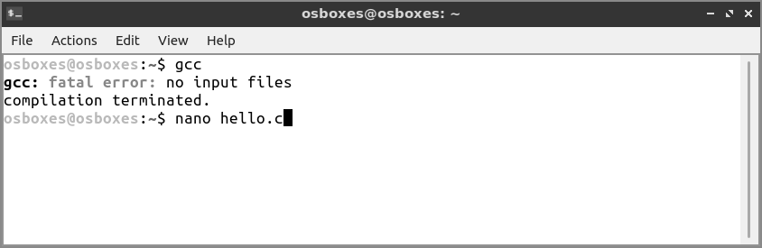
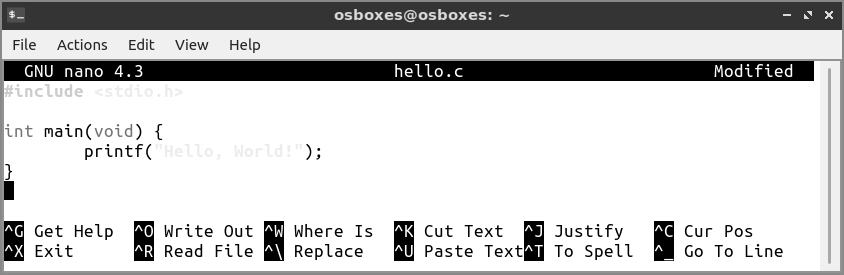
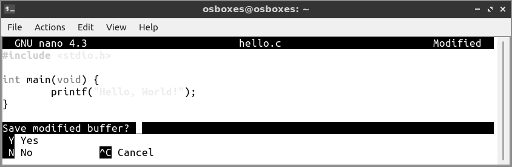
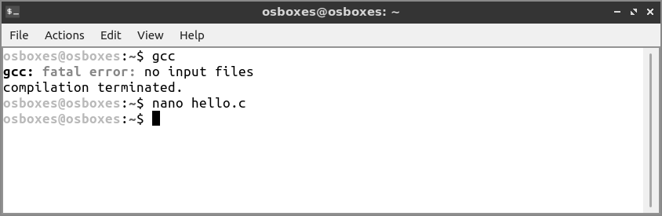
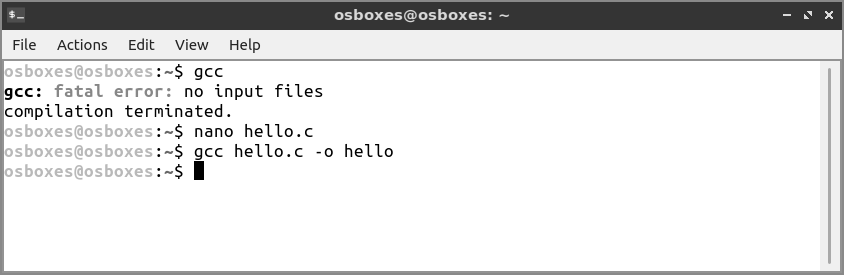
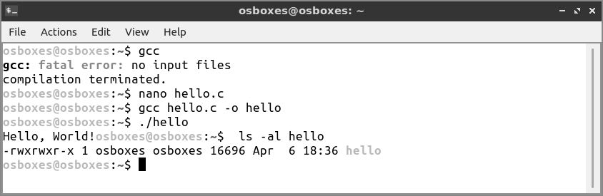

Skrypt dla początkujących
Poznaj C w ciągu kilku godzin
Poznaj C w ciągu kilku godzin
1 Wprowadzenie do C
Język C wydaje się najbardziej znanym językiem programowania na całym świecie, a przynajmniej ze swojej nazwy. Na całym świecie kursy informatyki używają go jako język referencyjny i niewykluczone, że dla najbardziej licznej grupy ludzi, pierwszym od którego zaczyna się naukę programowania wraz z Pythonem i Javą.
Ten skrypt oczywiście nie obejmuje wszystkiego, ale kieruje się zasadą 80/20. Jest skoncentrowany na większości zagadnień (wspomniane 80), przy czym bardziej złożone tematy optymalizuje pod względem czasu nauki (wspomniane 20).
C nie służy tylko studentom do opanowania umiejętności programowania. Nie jest językiem akademickim. Mógłbym rzec, że nie jest to najłatwiejszy język, należy raczej do niskopoziomowych języków programowania, które słyną z poziomu trudności.
Obecnie C jest szeroko stosowany w urządzeniach wbudowanych (ang. embedded devices) oraz serwerach internetowych, działających w linuksowym systemie operacyjnym. Samo jądro Linux (ang. Linux kernel) jest zbudowane przy użyciu C co również oznacza, że jest obecny na wszystkich urządzeniach z Androidem. Mógłbym rzec, że kod w C jest używany w dużej części świata, a to już jest wystarczająco spektakularne, by zainspirować się do jego poznania.
W czasie, gdy został opracowany przez Dennisa Ritchiego w laboratoriach Bella, był uważany za język wysokiego poziomu, ponieważ kod w niezmienionej formie można było uruchomić na różnych komputerach. Obecnie definicja wysokopoziomowości języka, a szczególnie przenośności kodu, oznacza możliwość uruchomienia programu np. przy użyciu Node.js lub Python napisanego na komputerze Mac, w systemie Windows czy Linux. Dlatego aktualnie uznaje się, że C jest językiem niskiego poziomu.
Ale nie zawsze tak było. C wniósł do świata język, który był prosty do implementacji i posiadał kompilator, który nie trudno było przenieść na różne maszyny.
C jest kompilowanym językiem programowania, takim jak Go, Java, Swift lub Rust. Aktualnie popularne języki takie jak Python, Ruby lub JavaScript nazywa się językami interpretowanymi. Różnica polega na generacji pliku binarnego, który może być bezpośrednio uruchomiony i dystrybuowany. Nie mniej jednak możliwość generacji pliku wykonywalnego (ang. executable file) nie świadczy o tym, że język nie jest interpretowany.
W C nie ma automatycznej dealokacji, czyli tak zwanego odśmiecania pamięci (ang. garbage collection). Oznacza to oczywiście, że sami musimy zarządzać alokacją pamięci RAM (ang. random-access memory). Wymaga to dużej uwagi, ale również sprawia, że C jest idealny do pisania programów dla urządzeń wbudowanych (ang. embedded devices), takich jak Arduino.
W C nie ukrywa się złożoności i możliwości maszyny. Masz dużą swobodę, kiedy oczywiście wiesz, co możesz zrobić.
A teraz przedstawiam pierwszy program C, nazywa się ,,Witaj, świecie!’’
Kod źródłowy (ang. source code) programu rozpoczyna się od importu biblioteki stdio (nazwa oznacza standardową std bibliotekę wejścia-wyjścia io).
Ta biblioteka daje nam dostęp do funkcji wejścia/wyjścia.
Sam C jest bardzo niewielkim językiem, a wszystko co nie jest jego częścią, jest zapewniane przez biblioteki.
Wiele bibliotek jest rozwijanych i udostępnianych w sieci przez niezależnych programistów.
Natomiast standardowe biblioteki (ang. standard libraries) są wbudowane w kompilator, tj. stdio.
W stdio można znaleźć funkcję printf().
Ta funkcja umieszczona jest w obrębie funkcji main(). Funkcja main() jest punktem wejścia (ang. entry point) każdego programu w C.
Ale co to właściwie jest funkcja?
Funkcja w swoim obrębie zawiera kod programu, który korzystając z przekazanych argumentów, oddzielonych przecinkami, wykonuje określone zadania i zwraca pojedynczą wartość lub nic nie zwraca.
Funkcja main() nie otrzymuje argumentów i zwraca liczbę całkowitą.
Identyfikujemy to za pomocą słowa kluczowego void jako argumentu i słowa kluczowego int dla wartości zwracanej.
Kod potrzebny funkcji do wykonania jej operacji zawiera się w nawiasach klamrowych.
Jak widać, funkcja printf() jest napisana inaczej.
Nie ma zdefiniowanej wartości zwracanej, a my przekazujemy jako argument ciąg tekstowy w cudzysłowie.
Nie podajemy typu argumentu.
To dlatego, że jest to wywołanie funkcji. Gdzieś w bibliotece stdio funkcja printf jest zdefiniowana jako
Nie musisz teraz rozumieć co to oznacza, ale taka jest definicja tej funkcji.
Kiedy wywołujemy printf("Witaj,świecie!"); to właśnie tam jest uruchamiana funkcja.
Funkcja main() zostaje wywołana przez system operacyjny podczas uruchomienia programu.
Jak uruchamiamy program C?
Jak wspomniałem, C jest językiem kompilowanym. Aby uruchomić program, musimy go najpierw skompilować. Każdy komputer z systemem Linux lub macOS ma już wbudowany kompilator C.
W każdym razie, po otwarciu okna terminala i wpisaniu gcc powinno nam zwrócić błąd informujący, że nie określono żadnego pliku:

Oznacza to, że kompilator C jest zainstalowany i możemy go używać.
Teraz zajmiemy się wpisaniem powyższego programu do pliku hello.c.
Możesz użyć dowolnego edytora, ale dla uproszczenia użyję edytora nano z poziomu wiersza poleceń (ang. command line):

Wpisz program:

Teraz naciśnij Ctrl+X, aby wyjść:

Potwierdź, naciskając klawisz y:

Wpisz nazwę pliku hello.c, a następnie naciśnij klawisz Enter, aby potwierdzić nazwę pliku:

To wszystko, powinniśmy teraz wrócić do terminala. Teraz:
Program nie powinien zwrócić żadnych błędów:

Powinien wygenerować plik wykonywalny hello. Teraz:
aby go uruchomić:

Jeśli jednak się nie uruchomił, a tak właśnie będzie w systemie Linuks, wpisz:
i spróbuj ponownie.
Dodałem ./ do nazwy programu, aby poinformować terminal, że polecenie znajduje się w bieżącym folderze.
Teraz, jeśli wywołasz ls -al hello, zobaczysz, że rozmiar tego programu wynosi tylko 12 KB:

Jest to jedna z zalet C. Jest niezrównanie zoptymalizowany ale to jest tylko jeden z powodów przez które jest tak eksploatowany w urządzeniach wbudowanych (ang. embedded devices), które mają bardzo ograniczoną ilość zasobów.